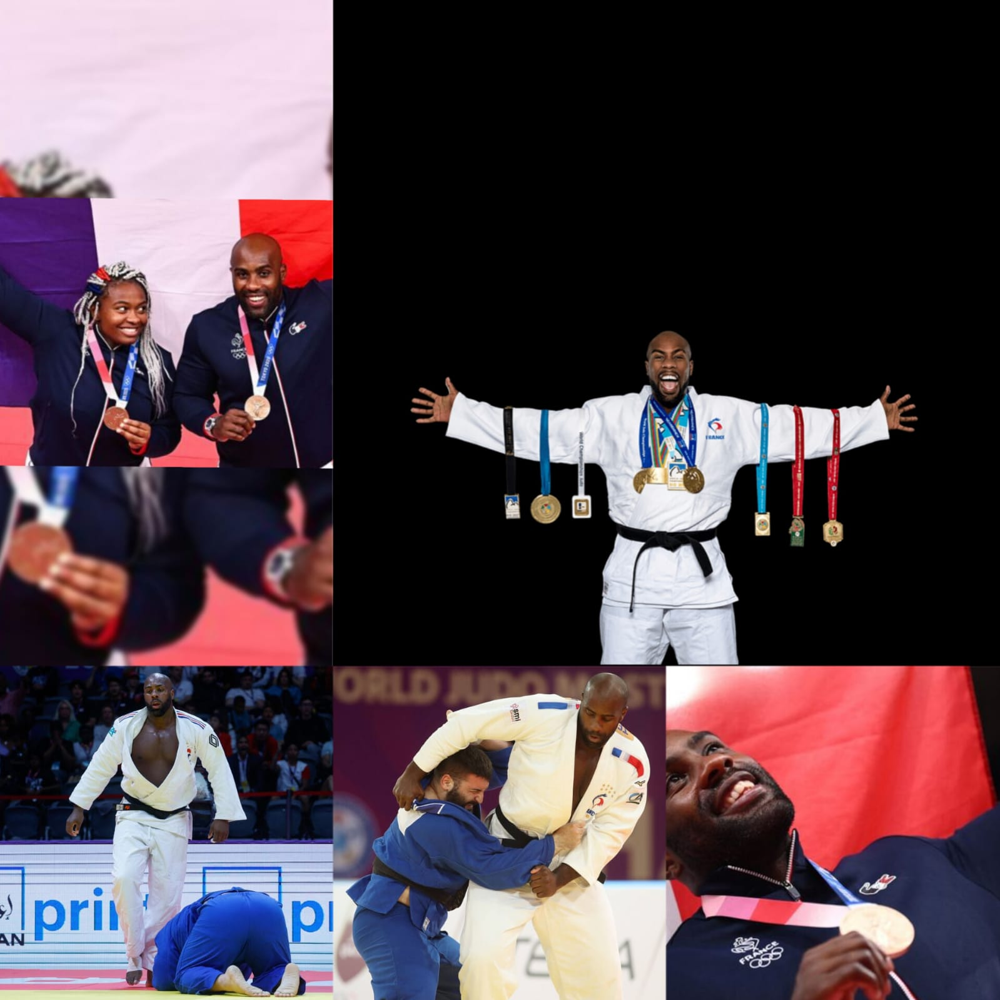
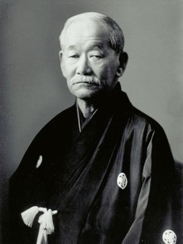

Allow me to share my interests that arouse the most passion in me: Judo and reading.
Since my earliest memories, my passion for judo has never left me. In my opinion, there is nothing like the satisfaction of acquiring expertise in a particular discipline or field. I am currently training in the martial arts of Colmar, I have the rank of yellow belt. Outside of the tatami mats, I devote time to practicing fighting and studying the strategic principles of judo. The latter allows both the improvement of physical condition, the mastery of self-defense techniques and especially mental discipline.
It is interesting to note that the judoka considered the greatest in the world with his multiple Olympic and world titles is French. I followed his journey from the Democratic Republic of Congo. Teddy Riner, born April 7, 1989 in Pointe-à-Pitre, Guadeloupe. Full of energy, Teddy tried his hand at climbing, golf, tennis, swimming, football from the age of 5… and of course Judo! But very quickly, Teddy will opt for Judo. “I already had very good results,” he admits. “My choice was partly guided by my performance.”

The founder of Judo is Jigoro Kano, a Japanese born in 1860. Kano created judo by synthesizing various techniques from jiu-jitsu, adding educational and moral principles. He founded Kodokan, the first Judo dojo in Tokyo in 1882. Kano developed Judo into more than just a martial art emphasizing physical, mental and moral development. In addition to his contribution to the formation of Judo, Jigoro Kano played an important role in the Olympic movement. He was the first Japanese to be a member of the International Olympic Committee. Kano left a lasting legacy and judo as a discipline was included in the Olympic Games in 1964. His educational vision continues to influence the practice of judo across the world.
“In judo, the student and the teacher walk together on the tatami to perfect the body, mind and heart” - Jigoro Kano

Finally reading, « which is much more than a simple activity for me. It’s an immersion into unexplored worlds. An infinite exploration of perceptions and ideas. Through each page turned, I find a captivating escape and expansion of my understanding of the world. Books offer a wealth of knowledge and emotional depth that transcends the confines of the everyday. Each book, each essay is an intellectual adventure that broadens my horizons and stimulates my thinking.» (Bernard Dadié). Reading accompanies me in every period of my life, bringing understanding, empathy and a constant thirst for discovery, particularly the captivating stories of the Bible. I could suggest, as an idea, the following books: Rich Dad, Poor Dad; the 48 laws of power, don't split the pear in two, a little thing can change. Currently, I am delving more into books focused on personal development.